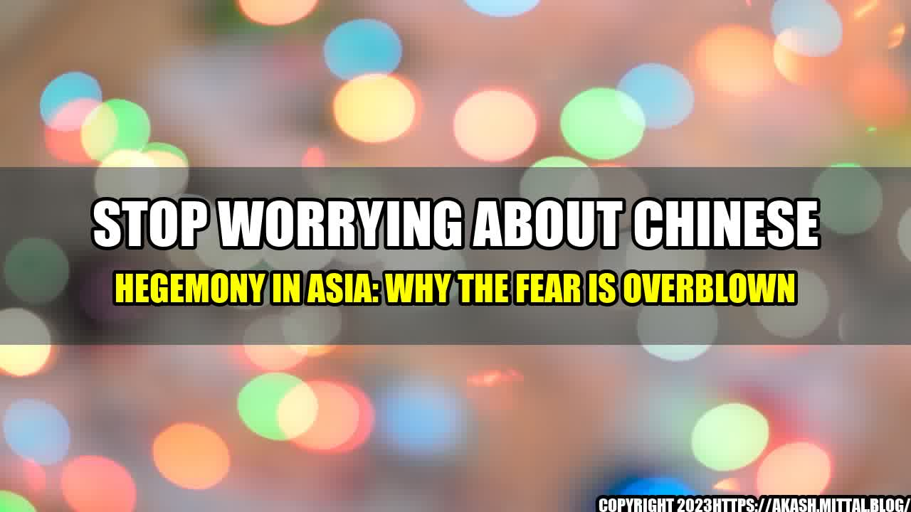

Stop Worrying About Chinese Hegemony in Asia

Why the Fear is Overblown
As tensions between China and the United States continue to mount, many are concerned about China's growing influence in Asia. Some fear that China is seeking hegemony in the region and poses a threat to the stability of the international order.
But is the fear of China's hegemony really warranted? Or is it overblown?
An Interesting Story
In 2010, China was involved in a territorial dispute with Japan over the Diaoyu/Senkaku Islands in the East China Sea. The dispute led to protests in China, the boycotting of Japanese goods, and even the smashing of Japanese cars.
However, despite these tensions, China and Japan continued to do business with each other. In fact, Japan is China's largest trading partner, and China is Japan's second largest trading partner.
This anecdote illustrates that while there may be tensions between nations, it doesn't necessarily mean that there will be a complete breakdown of diplomatic and economic relations.
Quantifiable Examples
Furthermore, the fear of China's hegemony in Asia seems to be overblown when we consider the actual facts on the ground.
- China's military spending is still far behind that of the United States – in 2021, China's military budget was $209 billion, compared to the United States' $778 billion.
- China's military capabilities are also largely untested – the country has not fought a war since the 1970s.
- China's economy, while large, still faces many challenges – from high levels of debt to an aging population to an overreliance on exports.
- Many countries in Asia are also wary of China's growing influence and are taking steps to mitigate it – such as forming alliances, increasing military spending, and diversifying their trading partners.
Conclusion
In conclusion, while it's true that China's rising power and influence in Asia is a cause for concern, the fear of Chinese hegemony in the region seems to be overblown.
Instead of focusing on fear, it's important for countries to work together to promote stability and cooperation in the region. This can be achieved through dialogue, diplomacy, and increasing economic and military ties between nations.
- We should recognize that there will always be tensions and disagreements between nations, but we should also strive to find common ground and work towards cooperation and shared prosperity.
- We should also be wary of relying too heavily on one country or alliance, and work to diversify our partnerships and trading relationships to promote stability and avoid overreliance on any one nation.
- And finally, we should continue to invest in and promote democratic institutions and values, as they are key to providing a counterbalance to authoritarian regimes and promoting stability and prosperity in the region.
References:
- https://www.reuters.com/world/china/chinas-2021-military-budget-rise-68-yoy-9656-bln-20210305/
- https://www.cfr.org/china/chinas-rise-what-it-means-united-states-and-asia
- https://www.csis.org/analysis/contrasting-approaches-chinese-and-japanese-foreign-aid
- https://thediplomat.com/2021/08/how-japan-views-chinas-influence-in-asia/
Hashtags: #China #Asia #Hegemony #InternationalRelations #Economics #Politics
Article Category: Politics/Economics
Curated by Team Akash.Mittal.Blog
Share on Twitter Share on LinkedIn